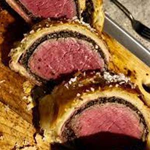
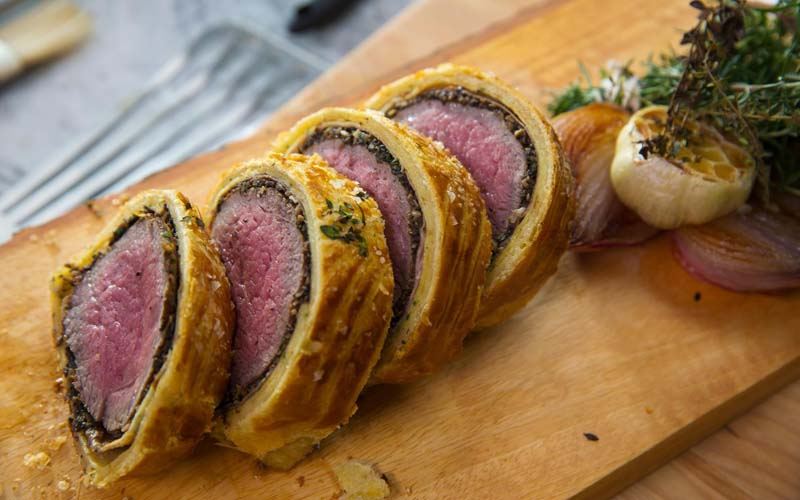

International Dishes Recipe 1:
Beef Wellington
- Dish Description:
- Beef Wellington is a steak dish of English origin, made out of fillet steak coated with pâté and duxelles, wrapped in puff pastry, then baked. Some recipes include wrapping the coated meat in a crêpe or parma ham to retain the moisture and prevent it from making the pastry soggy. A whole tenderloin may be wrapped and baked, and then sliced for serving, or the tenderloin may be sliced into individual portions prior to wrapping and baking.

Ingredients:
- 1 (2 lb.) center-cut beef tenderloin, trimmed
- kosher salt
- Freshly ground black pepper
- Olive oil, for greasing
- 2 tbsp. Dijon mustard
- 1 1/2 lb. mixed mushrooms, roughly chopped
- 1 shallot, roughly chopped
- Leaves from 1 thyme sprig
- 2 tbsp. unsalted butter
- 12 thin slices prosciutto
- Flour, for dusting
- 14 oz. frozen puff pastry, thawed
- 1 large egg, beaten
- Flaky salt, for sprinkling
Directions:
- Using kitchen twine, tie tenderloin in 4 places. Season generously with salt and pepper.
- Over high heat, coat bottom of a heavy skillet with olive oil.
- Once pan is nearly smoking, sear tenderloin until well-browned on all sides, including the ends, about 2 minutes per side (12 minutes total).
- Transfer to a plate. When cool enough to handle, snip off twine and coat all sides with mustard. Let cool in fridge.
- Meanwhile, make duxelles: In a food processor, pulse mushrooms, shallots, and thyme until finely chopped.
- To skillet, add butter and melt over medium heat. Add mushroom mixture and cook until liquid has evaporated, about 25 minutes. Season with salt and pepper, then let cool in fridge.
- Place plastic wrap down on a work surface, overlapping so that it’s twice the length and width of the tenderloin.
- Shingle the prosciutto on the plastic wrap into a rectangle that’s big enough to cover the whole tenderloin. Spread the duxelles evenly and thinly over the prosciutto.
- Season tenderloin, then place it at the bottom of the prosciutto. Roll meat into prosciutto-mushroom mixture, using plastic wrap to roll tightly.
- Tuck ends of prosciutto as you roll, then twist ends of plastic wrap tightly into a log and transfer to fridge to chill (this helps it maintain its shape).
- Heat oven to 425°. Lightly flour your work surface, then spread out puff pastry and roll it into a rectangle that will cover the tenderloin (just a little bigger than the prosciutto rectangle you just made!).
- Remove tenderloin from plastic wrap and place on bottom of puff pastry. Brush the other three edges of the pastry with egg wash, then tightly roll beef into pastry.
- Once the log is fully covered in puff pastry, trim any extra pastry, then crimp edges with a fork to seal well.
- Wrap roll in plastic wrap to get a really tight cylinder, then chill for 20 minutes.
- Remove plastic wrap, then transfer roll to a foil-lined baking sheet. Brush with egg wash and sprinkle with flaky salt.
- Bake until pastry is golden and the center registers 120°F for medium-rare, about 40 to 45 minutes.
- Let rest 10 minutes before carving and serving.